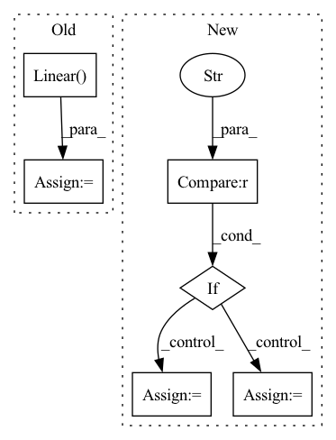

Pattern ID :764
Before Change
assert image_height % patch_size == 0 and image_width % patch_size == 0, "Image dimensions must be divisible by the patch size."
num_patches = (image_height // patch_size) * (image_width // patch_size)
patch_dim = channels * patch_size * patch_size
self.to_patch_embedding = nn.Sequential(
Rearrange("b c (h p1) (w p2) -> b (h w) (p1 p2 c)", p1=patch_size, p2=patch_size),
nn.Linear( patch_dim, emb_dim) ,
)
//Embedding
self.cls_token = nn.Parameter(torch.randn(1, 1, emb_dim))After Change
if type == "full":
self.head_depth = HeadDepth(resample_dim)
self.head_segmentation = HeadSeg(resample_dim, nclasses=nclasses)
elif type == "depth" :
self.head_depth = HeadDepth(resample_dim)
self.head_segmentation = None
else:
self.head_depth = None
self.head_segmentation = HeadSeg(resample_dim, nclasses=nclasses)
def forward(self, img):
// x = self.to_patch_embedding(img)In pattern: SUPERPATTERN
Frequency: 3
Non-data size: 6
Instances Fragment ID: 2485989
Project Name: antocad/focusondepth
Commit Name: 705d8789c4e66dbdbfdd3aeb7f20666f019481dd
Time: 2022-01-03
Author: antoine.cadiou@icloud.com
File Name: FOD/FocusOnDepth.py
M Class Name: FocusOnDepth
N Class Name: FocusOnDepth
M Method Name: __init__(14)
N Method Name: __init__(12)
M Parent Class: nn.Module
N Parent Class: nn.Module
M File Name: FOD/FocusOnDepth.py
N File Name: FOD/FocusOnDepth.py
M Start Line: 38
M End Line: 69
N Start Line: 25
N End Line: 81
Before Change
input_dim = self.obs_size
for i in range(self.custom_config["model_arch_args"]["fc_layer"]):
out_dim = self.custom_config["model_arch_args"]["out_dim_fc_{}".format(i)]
fc_layer = nn.Linear( input_dim, out_dim)
layers.append(fc_layer)
input_dim = out_dim
elif "conv_layer" in self.custom_config["model_arch_args"]:
self.obs_size = self.full_obs_space["obs"].shapeAfter Change
self.full_obs_space = getattr(obs_space, "original_space", obs_space)
self.n_agents = self.custom_config["num_agents"]
if "encode_layer" in self.custom_config["model_arch_args"] :
encode_layer = self.custom_config["model_arch_args"]["encode_layer"]
encoder_layer_dim = encode_layer.split("-")
encoder_layer_dim = [int(i) for i in encoder_layer_dim]
else: // default config
encoder_layer_dim = []
for i in range(self.custom_config["model_arch_args"]["fc_layer"]):
out_dim = self.custom_config["model_arch_args"]["out_dim_fc_{}".format(i)]
encoder_layer_dim.append(out_dim) Fragment ID: 2486050
Project Name: replicable-marl/marllib
Commit Name: 229bfd1c9db33d2ff0761dbdbe21e47a47a9b87c
Time: 2023-02-23
Author: hhhusiyi@163.com
File Name: marllib/marl/models/zoo/rnn/base_rnn.py
M Class Name: Base_RNN
N Class Name: Base_RNN
M Method Name: __init__(6)
N Method Name: __init__(6)
M Parent Class: TorchRNN,nn.Module
N Parent Class: TorchRNN,nn.Module
M File Name: marllib/marl/models/zoo/rnn/base_rnn.py
N File Name: marllib/marl/models/zoo/rnn/base_rnn.py
M Start Line: 39
M End Line: 86
N Start Line: 34
N End Line: 105
Before Change
io_size = ch * freqs
self.gru = nn.GRU(io_size, hidden_size, *args, **kwargs)
self.norm = nn.LayerNorm(hidden_size)
self.fc = nn.Linear( hidden_size, io_size)
def forward(self, x: Tensor, h: Optional[Tensor] = None) -> Tuple[Tensor, Tensor]:
GRU transposing [B, C, T, F] input shape to [B, T, C*F].
_, _, _, f = x.shapeAfter Change
super().__init__()
self.conv = Conv2dNormAct(in_ch, out_ch, kernel_size=kernel, fstride=fstride)
assert gru_mode in ("skip", "scale")
if gru_mode == "skip" :
skip = nn.Identity
scale = None
else:
skip = None
scale = nn.Sigmoid
self.gru = GruSE(out_ch, gru_dim, groups=gru_groups, skip=skip, scale_activation=scale)
def forward(self, input: Tensor, h=None) -> Tuple[Tensor, Tensor]: Fragment ID: 2486079
Project Name: rikorose/deepfilternet
Commit Name: 29ca309dcc54dd9da42b84a8c2a658b009f143a1
Time: 2022-04-12
Author: h.schroeter@pm.me
File Name: DeepFilterNet/df/multistagenet.py
M Class Name: GruMlp
N Class Name: EncLayer
M Method Name: __init__(8)
N Method Name: __init__(4)
M Parent Class: nn.Module
N Parent Class: nn.Module
M File Name: DeepFilterNet/df/multistagenet.py
N File Name: DeepFilterNet/df/multistagenet.py
M Start Line: 250
M End Line: 256
N Start Line: 211
N End Line: 228